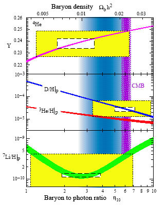

| 3. Вселенная в прошлом |
| Обсудим два этапа эволюции Вселенной, о которых сегодня имеются надежные наблюдательные данные. Один из них, относительно недавний — это этап перехода вещества во Вселенной из состояния плазмы в газообразное состояние. Это произошло при температуре 3000 градусов, а возраст Вселенной к тому моменту составлял 300 тыс. лет (совсем немного по сравнению с современными 14 млрд лет). До этого электроны и протоны двигались отдельно друг от друга, вещество представляло из себя плазму. При температуре 3000 градусов произошло объединение электронов и протонов в атомы водорода, и Вселенная оказалась заполненной этим газом. Важно, что плазма непрозрачна для электромагнитного излучения; фотоны всё время излучаются, поглощаются, рассеиваются на электронах плазмы. Газ, наоборот, прозрачен. Значит, пришедшее к нам электромагнитное излучение с температурой 2,7 градуса свободно путешествовало во Вселенной с момента перехода плазма—газ, остыв (покраснев) с тех пор в 1100 раз из-за расширения Вселенной. Это реликтовое электромагнитное излучение сохранило в себе информацию о состоянии Вселенной в момент перехода плазма—газ; с его помощью мы имеем фотоснимок (буквально!) Вселенной в возрасте 300 тыс. лет, когда её температура составляла 3000 градусов. Измеряя температуру этого реликтового электромагнитного излучения, пришедшего к нам с разных направлений на небе, мы узнаём, какие области были теплее или холоднее (а значит, плотнее или разреженнее), чем в среднем по Вселенной, а главное — насколько они были теплее или холоднее. Результат этих измерений состоит в том, что Вселенная в возрасте 300 тыс. лет была гораздо более однородной, чем сегодня: вариации температуры и плотности составляли тогда менее 10–4 (0,01%) от средних значений. Тем не менее, эти вариации существовали: с разных направлений электромагнитное излучение приходит с несколько различной температурой. Это показано на рис. 3, где изображено распределение температуры по небесной сфере (фотоснимок ранней Вселенной) за вычетом средней температуры 2,725 градусов Кельвина; более холодные области показаны синим, более теплые — красным цветом4. |
| Фотоснимок, изображенный на рис. 3, привел к нескольким важным и неожиданным выводам.
Во-первых, он позволил установить, что наше трехмерное пространство с хорошей степенью точности
евклидово: сумма углов треугольника в нем равна 180 градусов даже для треугольников со
сторонами, длины которых сравнимы с размером видимой части Вселенной, т. е. сравнимы с 14 млрд
световых лет. Вообще говоря, общая теория относительности допускает, что пространство может
быть не евклидовым, а искривленным; наблюдательные же данные свидетельствуют, что это не так
(по крайней мере для нашей области Вселенной). Способ измерения «суммы углов треугольника» на
космологических масштабах расстояний состоит в следующем. Можно надежно вычислить характерный
пространственный размер областей, где температура отличается от средней: на момент перехода
плазма—газ этот размер определяется возрастом Вселенной, т. е. пропорционален 300 тыс. световых
лет. Наблюдаемый угловой размер этих областей зависит от геометрии трехмерного пространства,
что и дает возможность установить, что эта геометрия — евклидова.
В случае евклидовой геометрии трехмерного пространства общая теория относительности однозначно
связывает темп расширения Вселенной с суммарной плотностью всех форм энергии, так же как в
ньютоновской теории тяготения скорость обращения Земли вокруг Солнца определяется массой
Солнца. Измеренный темп расширения соответствует полной плотности энергии в современной
Вселенной В терминах плотности массы (поскольку энергия связана с массой соотношением Е = mс2) это число составляет Если бы энергия во Вселенной целиком определялась энергией покоя обычного вещества, то в среднем во Вселенной было бы 5 протонов в кубическом метре. Мы увидим, однако, что обычного вещества во Вселенной гораздо меньше. Во-вторых, из фотоснимка рис. 3 можно установить, какова была величина (амплитуда) неоднородностей температуры и плотности в ранней Вселенной — она составляла 10–4–10–5 от средних значений. Именно из этих неоднородностей плотности возникли галактики и скопления галактик: области с более высокой плотностью притягивали к себе окружающее вещество за счет гравитационных сил, становились еще более плотными и в конечном итоге образовывали галактики. Поскольку начальные неоднородности плотности известны, процесс образования галактик можно рассчитать и результат сравнить с наблюдаемым распределением галактик во Вселенной. Этот расчет согласуется с наблюдениями, только если предположить, что помимо обычного вещества во Вселенной имеется другой тип вещества — темная материя, вклад которой в полную плотность энергии сегодня составляет около 25%. 
Другой этап эволюции Вселенной соответствует еще более ранним временам, от 1 до 200 секунд (!) с момента Большого Взрыва, когда температура Вселенной достигала миллиардов градусов. В это время во Вселенной происходили термоядерные реакции, аналогичные реакциям, протекающим в центре Солнца или в термоядерной бомбе. В результате этих реакций часть протонов связалась с нейтронами и образовала легкие ядра — ядра гелия, дейтерия и лития-7. Количество образовавшихся легких ядер можно рассчитать, при этом единственным неизвестным параметром является плотность числа протонов во Вселенной (последняя, разумеется, уменьшается за счет расширения Вселенной, но её значения в разные времена простым образом связаны между собой). Сравнение этого расчета с наблюдаемым количеством легких элементов во Вселенной приведено на рис. 4: линии представляют собой результаты теоретического расчета в зависимости от единственного параметра — плотности обычного вещества (барионов), а прямоугольники — наблюдательные данные. Замечательно, что имеется согласие для всех трех легких ядер (гелия-4, дейтерия и лития-7); согласие есть и с данными по реликтовому излучению (показаны вертикальной полосой на рис. 4, обозначенной СМВ — Cosmic Microwave Background). Это согласие свидетельствует о том, что общая теория относительности и известные законы ядерной физики правильно описывают Вселенную в возрасте 1–200 секунд, когда вещество в ней имело температуру миллиард градусов и выше. Для нас важно, что все эти данные приводят к выводу о том, что плотность массы обычного вещества в современной Вселенной составляет т. е. обычное вещество вкладывает всего 5% в полную плотность энергии во Вселенной. 4 Данные наблюдений со спутника WMAP. |